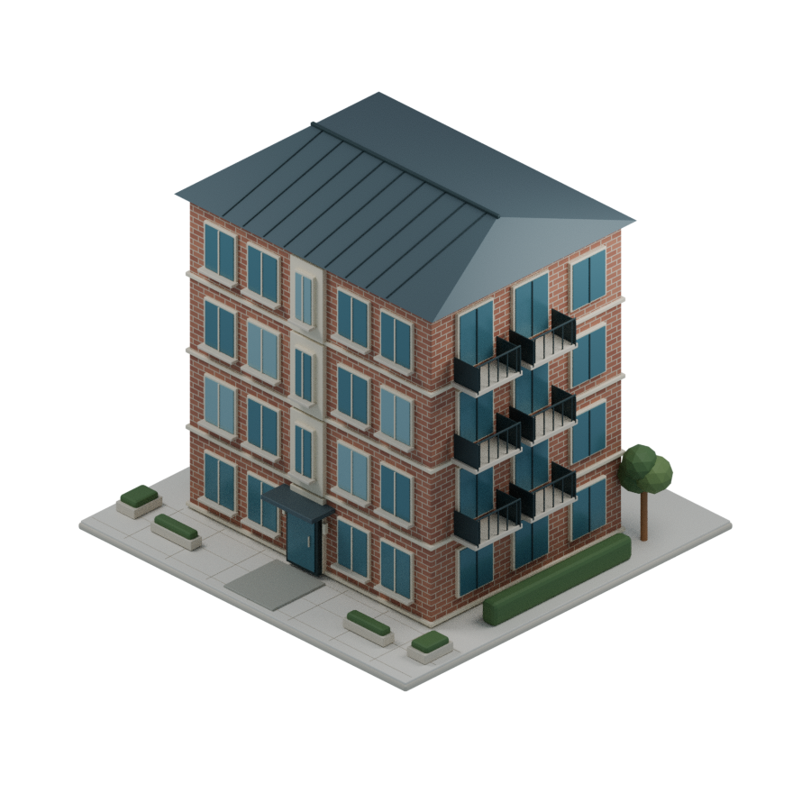
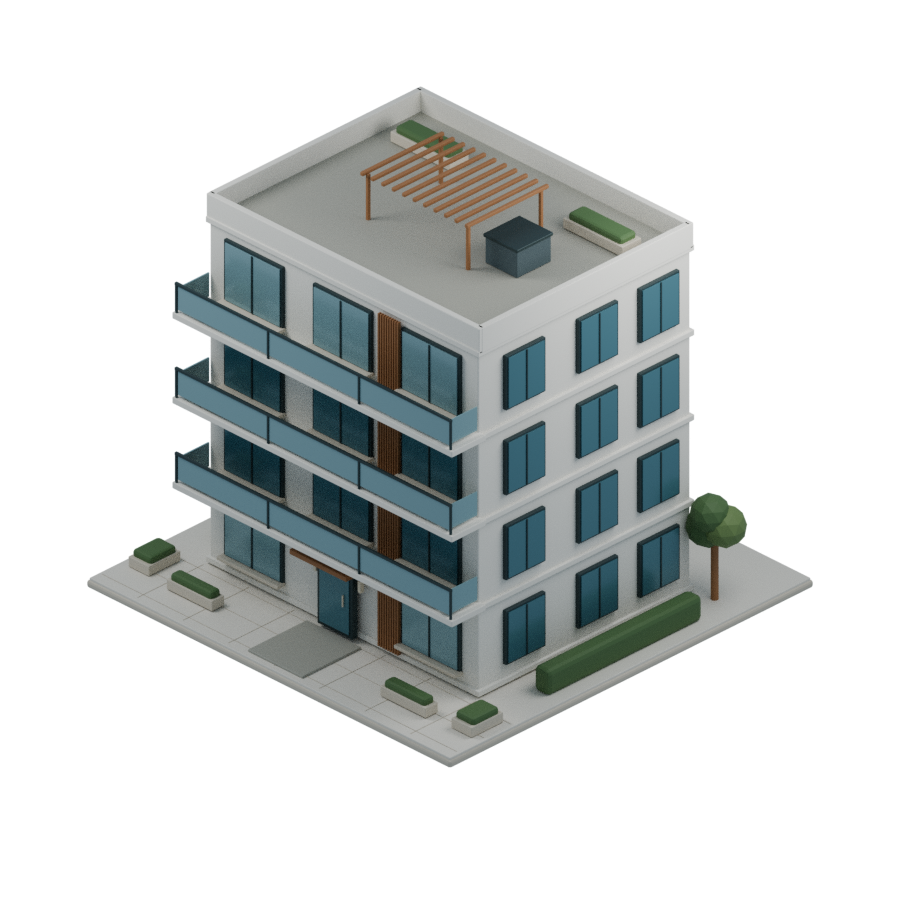

CITIES_DO · 4층 맨션
같은 4×4 부지 · 같은 시점과 조명 · 서로 다른 외관
A
벽돌형 맨션
익숙한 동네의 단단한 표정

붉은 벽돌 · 석재 창틀
경사지붕 · 측면 소형 발코니
따뜻함 / 생활감
낮은 단계 주거 구역에 어울림
B
모던형 맨션
밝고 정돈된 주거의 표정

밝은 외벽 · 우드 포인트
넓은 발코니 · 옥상 퍼골라
개방감 / 정돈됨
재개발·중급 주거 구역에 어울림